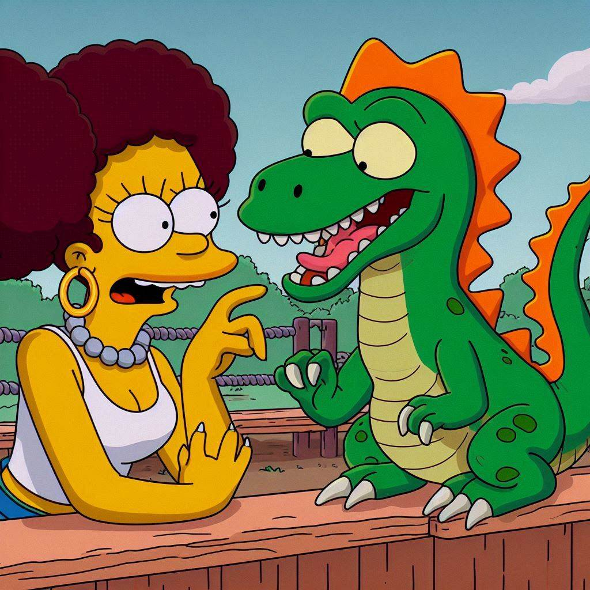
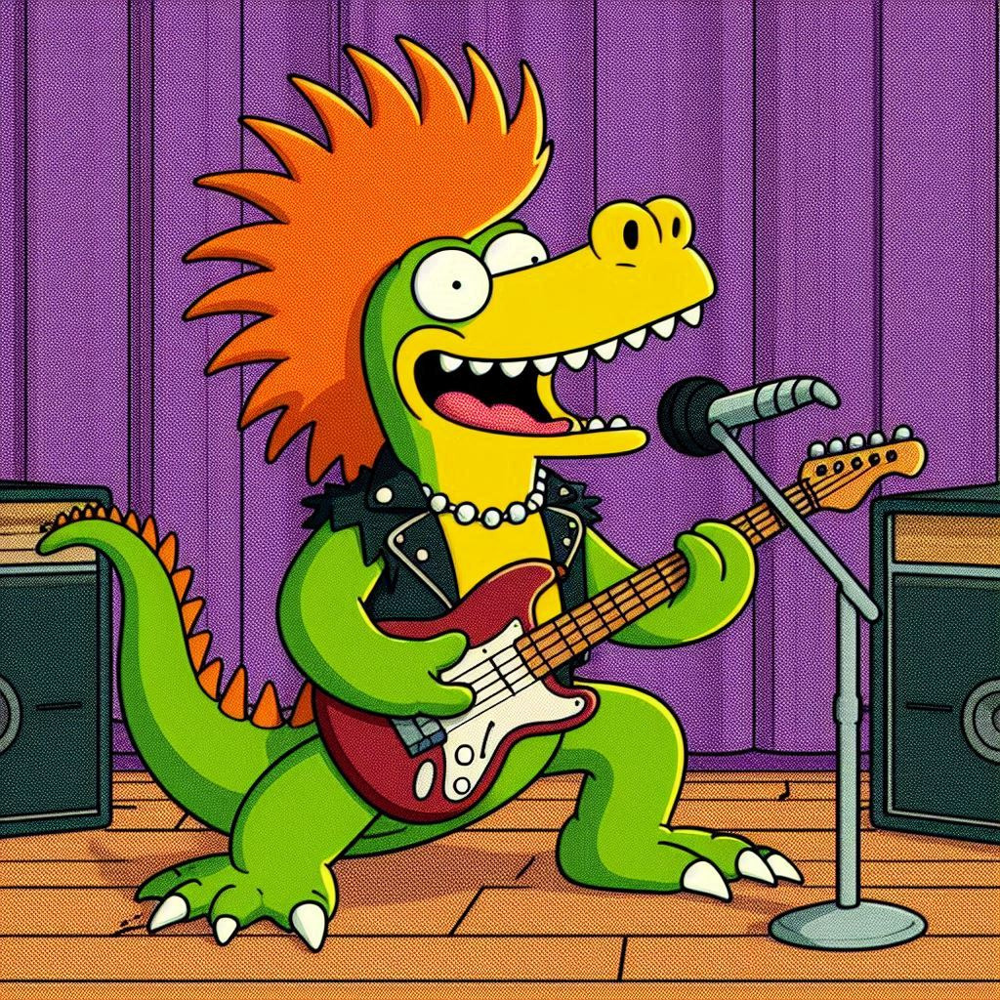

Descubra os Dinossauros Mais Exóticos e Criativos do Jurássico!
Prepare-se para uma aventura jurássica como você nunca viu antes!
Nesta página, você encontrará dinossauros que vão além da imaginação,
cada um com características únicas e histórias inesperadas. Desde
o filosófico Filosossauro até o agitado
Punkossauro, esses seres lendários mostram que a
criatividade também habitava o passado pré-histórico.
Navegue pelos dinossauros exóticos e clique em seus nomes para
expandir e descobrir detalhes curiosos e divertidos sobre cada
um. Será que você conhece todos os segredos do Jurássico? Vamos
descobrir juntos!
Filosossauro Philosaurus contemplus

O Filosossauro era um dinossauro herbívoro peculiar,
conhecido não apenas por seu tamanho imponente, mas também por seu
comportamento contemplativo. Com uma cabeça grande, adornada com chifres
curvados, ele passava horas parado em clareiras, observando o mundo ao
seu redor como se estivesse em uma profunda reflexão filosófica.
Os filhotes de Filosossauro eram ensinados a observar
a natureza e a meditar sobre questões existenciais, como "O que é
ser um dinossauro?" e "Qual o significado da vida nas
florestas?" Isso fez com que se tornassem um símbolo de sabedoria
entre outros dinossauros, que frequentemente se reuniam em torno dele
em busca de conselhos.
Curiosamente, acredita-se que o Filosossauro desenvolveu
um comportamento quase pacifista. Quando confrontado com predadores, ele
não fugia nem atacava. Em vez disso, erguia uma sobrancelha escamosa,
questionando o agressor: "Será que a verdadeira luta não é, na verdade,
contra o vazio dentro de nós?". Ele frequentemente se isolava em
montes rochosos para contemplar o horizonte, se perguntando se o universo
era realmente infinito ou se os meteoros representavam apenas o final de
um grande ciclo cósmico.
Nerdossauro Intellectusaurus geekus
O Nerdossauro é, sem dúvida, o mais curioso e peculiar de
todos os dinossauros. Reconhecido pela sua fixação por padrões, teorias e
colecionáveis pré-históricos, esse dinossauro poderia facilmente ser
encontrado nas cavernas mais silenciosas, rodeado de pedras brilhantes que
ele organizava metodicamente, categorizando-as por cores e densidade.
Com sua postura levemente corcunda e seus olhos sempre semicerrados de
tanto examinar detalhes, o Nerdossauro podia ser visto
ajustando seus óculos de pedra (um invento que, embora inútil, lhe
conferia um ar intelectual). Seus amigos mais próximos eram o
Filosossauro, com quem discutia teorias do tempo e do
espaço, e o Tecnossauro, com quem dividia o entusiasmo
por novas invenções.
Embora fosse alvo de piadas por parte de dinossauros mais "ativos",
o Nerdossauro sempre tinha uma resposta afiada na ponta
da língua: "Podem rir de mim, mas quando um meteoro estiver chegando,
quem vocês vão querer do lado? O cara forte ou o cara que sabe calcular
a trajetória dele?"
Fofocassauro Gossiposaurus verbosus

O Fofocassauro é a verdadeira máquina de boatos da era
jurássica. Conhecido por sua língua afiada e seu insaciável apetite por
novidades, ele passava mais tempo conversando do que caçando ou se
protegendo de predadores. Sempre com as orelhas em pé, ele parecia ter
um radar natural para captar qualquer ruído de interesse – seja um
conflito entre dois Tiranossauros ou o acasalamento secreto de um casal
de Pterodáctilos.
O Fofocassauro não era malicioso, mas simplesmente incapaz
de guardar uma informação para si. Se um Velociraptor desaparecia
misteriosamente, o Fofocassauro já estava lá, narrando uma
teoria elaborada sobre onde ele foi parar, completando a história com
detalhes "exclusivos" que ele supostamente soube em primeira mão.
Suas conversas raramente eram confirmadas, mas isso não importava, pois o
que ele amava de verdade era o drama e o entretenimento de espalhar as fofocas.
Em termos físicos, o Fofocassauro possuía uma boca
surpreendentemente grande e ágil, ideal para falar sem parar, e ouvidos
aguçados, perfeitos para capturar cada sussurro do vale. Sua cauda longa às
vezes balançava de forma nervosa, como se estivesse sempre pronta para contar
a próxima novidade.
Apesar de ser um falador nato, o Fofocassauro muitas vezes
escapava de enrascadas ao usar seu dom da palavra para se safar de situações
perigosas, distraindo predadores com uma história dramática sobre algum
"escândalo" entre outras espécies. Afinal, quem poderia resistir
a uma boa fofoca?
Musculosaurus Fitnesstaurus energicus
O Musculosaurus é o verdadeiro "rato de academia" da
era jurássica, um dinossauro obcecado por ficar em forma e desenvolver sua força.
Ele é facilmente reconhecido por seus músculos bem definidos, escamas brilhantes
e uma postura sempre ereta, como se estivesse posando para uma competição de
fisiculturismo a qualquer momento.
Este dinossauro passa horas em sua "academia natural", que consiste em
grandes pedras e troncos de árvores, onde ele levanta pesos de rochas e faz flexões
com sua cauda. O Musculosaurus tem um grupo de amigos igualmente
dedicados, e eles frequentemente se reúnem para treinos em grupo, onde competem para
ver quem consegue levantar mais peso ou correr mais rápido entre os grandes pilares
de rochas.
Além de sua paixão pelo fitness, o Musculosaurus é um motivador
natural. Ele não hesita em encorajar outros dinossauros a se juntarem a ele na
busca por uma vida saudável e ativa. "Vamos lá, pessoal! Cada repetição conta!
O futuro do seu corpo começa agora!" é seu lema.
Punkossauro Punkosaurus rebellicus

O Punkossauro é um dinossauro ousado e cheio de atitude, conhecido
por sua rebeldia e estilo de vida punk. Ele é o ícone da contracultura jurássica,
sempre desafiando normas e convenções, e promovendo a liberdade de expressão.
Com escamas de cores vibrantes e um impressionante moicano espetado, o
Punkossauro se destaca na multidão. Ele frequentemente usa acessórios como
pulseiras de spikes e jaquetas de couro feitas de folhas e pelagens de dinossauros.
Sua aparência única é um símbolo de sua individualidade e criatividade.
O Punkossauro adora música e é um talentoso músico, frequentemente
tocando em bandas com outros dinossauros. Seus shows são energéticos e cheios de
emoção, promovendo mensagens de liberdade, resistência e mudança social. Ele é
conhecido por suas letras provocativas que desafiam a ordem estabelecida e incentivam
os dinossauros a serem fiéis a si mesmos.
Além de sua paixão pela música, o Punkossauro também é um defensor
de causas sociais, organizando protestos e eventos para levantar a consciência sobre
questões importantes. Ele acredita que todos os dinossauros devem lutar por seus
direitos e lutar contra a opressão.